1.4. Support Vector Machines¶
Support vector machines (SVMs) are a set of supervised learning methods used for classification, regression and outliers detection.
The advantages of support vector machines are:
- Effective in high dimensional spaces.
- Still effective in cases where number of dimensions is greater than the number of samples.
- Uses a subset of training points in the decision function (called support vectors), so it is also memory efficient.
- Versatile: different Kernel functions can be specified for the decision function. Common kernels are provided, but it is also possible to specify custom kernels.
The disadvantages of support vector machines include:
- If the number of features is much greater than the number of samples, the method is likely to give poor performances.
- SVMs do not directly provide probability estimates, these are calculated using an expensive five-fold cross-validation (see Scores and probabilities, below).
The support vector machines in scikit-learn support both dense
(numpy.ndarray and convertible to that by numpy.asarray) and
sparse (any scipy.sparse) sample vectors as input. However, to use
an SVM to make predictions for sparse data, it must have been fit on such
data. For optimal performance, use C-ordered numpy.ndarray (dense) or
scipy.sparse.csr_matrix (sparse) with dtype=float64.
1.4.1. Classification¶
SVC, NuSVC and LinearSVC are classes
capable of performing multi-class classification on a dataset.
SVC and NuSVC are similar methods, but accept
slightly different sets of parameters and have different mathematical
formulations (see section Mathematical formulation). On the
other hand, LinearSVC is another implementation of Support
Vector Classification for the case of a linear kernel. Note that
LinearSVC does not accept keyword kernel, as this is
assumed to be linear. It also lacks some of the members of
SVC and NuSVC, like support_.
As other classifiers, SVC, NuSVC and
LinearSVC take as input two arrays: an array X of size [n_samples,
n_features] holding the training samples, and an array y of class labels
(strings or integers), size [n_samples]:
>>> from sklearn import svm
>>> X = [[0, 0], [1, 1]]
>>> y = [0, 1]
>>> clf = svm.SVC()
>>> clf.fit(X, y)
SVC(C=1.0, cache_size=200, class_weight=None, coef0=0.0,
decision_function_shape=None, degree=3, gamma='auto', kernel='rbf',
max_iter=-1, probability=False, random_state=None, shrinking=True,
tol=0.001, verbose=False)
After being fitted, the model can then be used to predict new values:
>>> clf.predict([[2., 2.]])
array([1])
SVMs decision function depends on some subset of the training data,
called the support vectors. Some properties of these support vectors
can be found in members support_vectors_, support_ and
n_support:
>>> # get support vectors
>>> clf.support_vectors_
array([[ 0., 0.],
[ 1., 1.]])
>>> # get indices of support vectors
>>> clf.support_
array([0, 1]...)
>>> # get number of support vectors for each class
>>> clf.n_support_
array([1, 1]...)
1.4.1.1. Multi-class classification¶
SVC and NuSVC implement the “one-against-one”
approach (Knerr et al., 1990) for multi- class classification. If
n_class is the number of classes, then n_class * (n_class - 1) / 2
classifiers are constructed and each one trains data from two classes.
To provide a consistent interface with other classifiers, the
decision_function_shape option allows to aggregate the results of the
“one-against-one” classifiers to a decision function of shape (n_samples,
n_classes):
>>> X = [[0], [1], [2], [3]]
>>> Y = [0, 1, 2, 3]
>>> clf = svm.SVC(decision_function_shape='ovo')
>>> clf.fit(X, Y)
SVC(C=1.0, cache_size=200, class_weight=None, coef0=0.0,
decision_function_shape='ovo', degree=3, gamma='auto', kernel='rbf',
max_iter=-1, probability=False, random_state=None, shrinking=True,
tol=0.001, verbose=False)
>>> dec = clf.decision_function([[1]])
>>> dec.shape[1] # 4 classes: 4*3/2 = 6
6
>>> clf.decision_function_shape = "ovr"
>>> dec = clf.decision_function([[1]])
>>> dec.shape[1] # 4 classes
4
On the other hand, LinearSVC implements “one-vs-the-rest”
multi-class strategy, thus training n_class models. If there are only
two classes, only one model is trained:
>>> lin_clf = svm.LinearSVC()
>>> lin_clf.fit(X, Y)
LinearSVC(C=1.0, class_weight=None, dual=True, fit_intercept=True,
intercept_scaling=1, loss='squared_hinge', max_iter=1000,
multi_class='ovr', penalty='l2', random_state=None, tol=0.0001,
verbose=0)
>>> dec = lin_clf.decision_function([[1]])
>>> dec.shape[1]
4
See Mathematical formulation for a complete description of the decision function.
Note that the LinearSVC also implements an alternative multi-class
strategy, the so-called multi-class SVM formulated by Crammer and Singer, by
using the option multi_class='crammer_singer'. This method is consistent,
which is not true for one-vs-rest classification.
In practice, one-vs-rest classification is usually preferred, since the results
are mostly similar, but the runtime is significantly less.
For “one-vs-rest” LinearSVC the attributes coef_ and intercept_
have the shape [n_class, n_features] and [n_class] respectively.
Each row of the coefficients corresponds to one of the n_class many
“one-vs-rest” classifiers and similar for the intercepts, in the
order of the “one” class.
In the case of “one-vs-one” SVC, the layout of the attributes
is a little more involved. In the case of having a linear kernel,
The layout of coef_ and intercept_ is similar to the one
described for LinearSVC described above, except that the shape of
coef_ is [n_class * (n_class - 1) / 2, n_features], corresponding to as
many binary classifiers. The order for classes
0 to n is “0 vs 1”, “0 vs 2” , ... “0 vs n”, “1 vs 2”, “1 vs 3”, “1 vs n”, . .
. “n-1 vs n”.
The shape of dual_coef_ is [n_class-1, n_SV] with
a somewhat hard to grasp layout.
The columns correspond to the support vectors involved in any
of the n_class * (n_class - 1) / 2 “one-vs-one” classifiers.
Each of the support vectors is used in n_class - 1 classifiers.
The n_class - 1 entries in each row correspond to the dual coefficients
for these classifiers.
This might be made more clear by an example:
Consider a three class problem with with class 0 having three support vectors
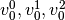 and class 1 and 2 having two support vectors
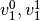 and  respectively. For each
support vector 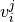, there are two dual coefficients. Let’s call
the coefficient of support vector in the classifier between
classes
respectively. For each
support vector 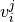, there are two dual coefficients. Let’s call
the coefficient of support vector in the classifier between
classes  and
and  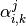.
Then
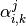.
Then dual_coef_ looks like this:
| 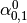 | 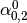 | Coefficients for SVs of class 0 |
| 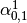 | 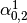 | |
| 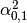 | 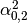 | |
| 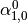 | 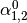 | Coefficients for SVs of class 1 |
| 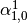 | 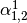 | |
| 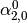 | 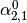 | Coefficients for SVs of class 2 |
| 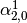 |  |
1.4.1.2. Scores and probabilities¶
The SVC method decision_function gives per-class scores
for each sample (or a single score per sample in the binary case).
When the constructor option probability is set to True,
class membership probability estimates
(from the methods predict_proba and predict_log_proba) are enabled.
In the binary case, the probabilities are calibrated using Platt scaling:
logistic regression on the SVM’s scores,
fit by an additional cross-validation on the training data.
In the multiclass case, this is extended as per Wu et al. (2004).
Needless to say, the cross-validation involved in Platt scaling
is an expensive operation for large datasets.
In addition, the probability estimates may be inconsistent with the scores,
in the sense that the “argmax” of the scores
may not be the argmax of the probabilities.
(E.g., in binary classification,
a sample may be labeled by predict as belonging to a class
that has probability <½ according to predict_proba.)
Platt’s method is also known to have theoretical issues.
If confidence scores are required, but these do not have to be probabilities,
then it is advisable to set probability=False
and use decision_function instead of predict_proba.
References:
- Wu, Lin and Weng, “Probability estimates for multi-class classification by pairwise coupling”. JMLR 5:975-1005, 2004.
1.4.1.3. Unbalanced problems¶
In problems where it is desired to give more importance to certain
classes or certain individual samples keywords class_weight and
sample_weight can be used.
SVC (but not NuSVC) implement a keyword
class_weight in the fit method. It’s a dictionary of the form
{class_label : value}, where value is a floating point number > 0
that sets the parameter C of class class_label to C * value.
SVC, NuSVC, SVR, NuSVR and
OneClassSVM implement also weights for individual samples in method
fit through keyword sample_weight. Similar to class_weight, these
set the parameter C for the i-th example to C * sample_weight[i].
1.4.2. Regression¶
The method of Support Vector Classification can be extended to solve regression problems. This method is called Support Vector Regression.
The model produced by support vector classification (as described above) depends only on a subset of the training data, because the cost function for building the model does not care about training points that lie beyond the margin. Analogously, the model produced by Support Vector Regression depends only on a subset of the training data, because the cost function for building the model ignores any training data close to the model prediction.
There are three different implementations of Support Vector Regression:
SVR, NuSVR and LinearSVR. LinearSVR
provides a faster implementation than SVR but only considers
linear kernels, while NuSVR implements a slightly different
formulation than SVR and LinearSVR. See
Implementation details for further details.
As with classification classes, the fit method will take as argument vectors X, y, only that in this case y is expected to have floating point values instead of integer values:
>>> from sklearn import svm
>>> X = [[0, 0], [2, 2]]
>>> y = [0.5, 2.5]
>>> clf = svm.SVR()
>>> clf.fit(X, y)
SVR(C=1.0, cache_size=200, coef0=0.0, degree=3, epsilon=0.1, gamma='auto',
kernel='rbf', max_iter=-1, shrinking=True, tol=0.001, verbose=False)
>>> clf.predict([[1, 1]])
array([ 1.5])
1.4.3. Density estimation, novelty detection¶
One-class SVM is used for novelty detection, that is, given a set of
samples, it will detect the soft boundary of that set so as to
classify new points as belonging to that set or not. The class that
implements this is called OneClassSVM.
In this case, as it is a type of unsupervised learning, the fit method will only take as input an array X, as there are no class labels.
See, section Novelty and Outlier Detection for more details on this usage.

1.4.4. Complexity¶
Support Vector Machines are powerful tools, but their compute and storage requirements increase rapidly with the number of training vectors. The core of an SVM is a quadratic programming problem (QP), separating support vectors from the rest of the training data. The QP solver used by this libsvm-based implementation scales between and 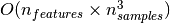 depending on how efficiently the libsvm cache is used in practice (dataset dependent). If the data is very sparse 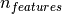 should be replaced by the average number of non-zero features in a sample vector.
Also note that for the linear case, the algorithm used in
LinearSVC by the liblinear implementation is much more
efficient than its libsvm-based SVC counterpart and can
scale almost linearly to millions of samples and/or features.
1.4.5. Tips on Practical Use¶
Avoiding data copy: For
SVC,SVR,NuSVCandNuSVR, if the data passed to certain methods is not C-ordered contiguous, and double precision, it will be copied before calling the underlying C implementation. You can check whether a give numpy array is C-contiguous by inspecting itsflagsattribute.For
LinearSVC(andLogisticRegression) any input passed as a numpy array will be copied and converted to the liblinear internal sparse data representation (double precision floats and int32 indices of non-zero components). If you want to fit a large-scale linear classifier without copying a dense numpy C-contiguous double precision array as input we suggest to use theSGDClassifierclass instead. The objective function can be configured to be almost the same as theLinearSVCmodel.Kernel cache size: For
SVC,SVR,nuSVCandNuSVR, the size of the kernel cache has a strong impact on run times for larger problems. If you have enough RAM available, it is recommended to setcache_sizeto a higher value than the default of 200(MB), such as 500(MB) or 1000(MB).Setting C:
Cis1by default and it’s a reasonable default choice. If you have a lot of noisy observations you should decrease it. It corresponds to regularize more the estimation.Support Vector Machine algorithms are not scale invariant, so it is highly recommended to scale your data. For example, scale each attribute on the input vector X to [0,1] or [-1,+1], or standardize it to have mean 0 and variance 1. Note that the same scaling must be applied to the test vector to obtain meaningful results. See section 数据预处理 for more details on scaling and normalization.
Parameter
nuinNuSVC/OneClassSVM/NuSVRapproximates the fraction of training errors and support vectors.In
SVC, if data for classification are unbalanced (e.g. many positive and few negative), setclass_weight='balanced'and/or try different penalty parametersC.The underlying
LinearSVCimplementation uses a random number generator to select features when fitting the model. It is thus not uncommon, to have slightly different results for the same input data. If that happens, try with a smaller tol parameter.Using L1 penalization as provided by
LinearSVC(loss='l2', penalty='l1', dual=False)yields a sparse solution, i.e. only a subset of feature weights is different from zero and contribute to the decision function. IncreasingCyields a more complex model (more feature are selected). TheCvalue that yields a “null” model (all weights equal to zero) can be calculated usingl1_min_c.
1.4.6. Kernel functions¶
The kernel function can be any of the following:
- linear: 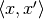.
- polynomial: 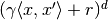.
is specified by keyword
degree,by
coef0.- rbf: 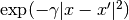.
is specified by keyword
gamma, must be greater than 0.- sigmoid (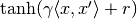), where
coef0.
Different kernels are specified by keyword kernel at initialization:
>>> linear_svc = svm.SVC(kernel='linear')
>>> linear_svc.kernel
'linear'
>>> rbf_svc = svm.SVC(kernel='rbf')
>>> rbf_svc.kernel
'rbf'
1.4.6.1. Custom Kernels¶
You can define your own kernels by either giving the kernel as a python function or by precomputing the Gram matrix.
Classifiers with custom kernels behave the same way as any other classifiers, except that:
- Field
support_vectors_is now empty, only indices of support vectors are stored insupport_- A reference (and not a copy) of the first argument in the
fit()method is stored for future reference. If that array changes between the use offit()andpredict()you will have unexpected results.
1.4.6.1.1. Using Python functions as kernels¶
You can also use your own defined kernels by passing a function to the
keyword kernel in the constructor.
Your kernel must take as arguments two matrices of shape
(n_samples_1, n_features), (n_samples_2, n_features)
and return a kernel matrix of shape (n_samples_1, n_samples_2).
The following code defines a linear kernel and creates a classifier instance that will use that kernel:
>>> import numpy as np
>>> from sklearn import svm
>>> def my_kernel(X, Y):
... return np.dot(X, Y.T)
...
>>> clf = svm.SVC(kernel=my_kernel)
Examples:
1.4.6.1.2. Using the Gram matrix¶
Set kernel='precomputed' and pass the Gram matrix instead of X in the fit
method. At the moment, the kernel values between all training vectors and the
test vectors must be provided.
>>> import numpy as np
>>> from sklearn import svm
>>> X = np.array([[0, 0], [1, 1]])
>>> y = [0, 1]
>>> clf = svm.SVC(kernel='precomputed')
>>> # linear kernel computation
>>> gram = np.dot(X, X.T)
>>> clf.fit(gram, y)
SVC(C=1.0, cache_size=200, class_weight=None, coef0=0.0,
decision_function_shape=None, degree=3, gamma='auto',
kernel='precomputed', max_iter=-1, probability=False,
random_state=None, shrinking=True, tol=0.001, verbose=False)
>>> # predict on training examples
>>> clf.predict(gram)
array([0, 1])
1.4.6.1.3. Parameters of the RBF Kernel¶
When training an SVM with the Radial Basis Function (RBF) kernel, two
parameters must be considered: C and gamma. The parameter C,
common to all SVM kernels, trades off misclassification of training examples
against simplicity of the decision surface. A low C makes the decision
surface smooth, while a high C aims at classifying all training examples
correctly. gamma defines how much influence a single training example has.
The larger gamma is, the closer other examples must be to be affected.
Proper choice of C and gamma is critical to the SVM’s performance. One
is advised to use sklearn.grid_search.GridSearchCV with C and gamma spaced
exponentially far apart to choose good values.
Examples:
1.4.7. Mathematical formulation¶
A support vector machine constructs a hyper-plane or set of hyper-planes in a high or infinite dimensional space, which can be used for classification, regression or other tasks. Intuitively, a good separation is achieved by the hyper-plane that has the largest distance to the nearest training data points of any class (so-called functional margin), since in general the larger the margin the lower the generalization error of the classifier.

1.4.7.1. SVC¶
Given training vectors 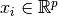, i=1,..., n, in two classes, and a vector 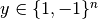, SVC solves the following primal problem:
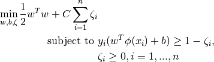
Its dual is
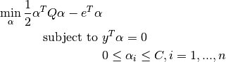
where 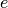 is the vector of all ones, 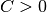 is the upper bound,
 is an
is an  by positive semidefinite matrix,
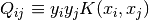 Where 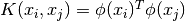
is the kernel. Here training vectors are implicitly mapped into a higher
(maybe infinite) dimensional space by the function
by positive semidefinite matrix,
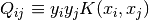 Where 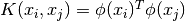
is the kernel. Here training vectors are implicitly mapped into a higher
(maybe infinite) dimensional space by the function  .
.
The decision function is:
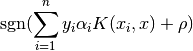
Note
While SVM models derived from libsvm and liblinear use C as
regularization parameter, most other estimators use alpha. The relation
between both is 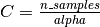.
This parameters can be accessed through the members dual_coef_
which holds the product 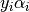, support_vectors_ which
holds the support vectors, and intercept_ which holds the independent
term 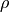 :
References:
- “Automatic Capacity Tuning of Very Large VC-dimension Classifiers” I Guyon, B Boser, V Vapnik - Advances in neural information processing 1993,
- “Support-vector networks” C. Cortes, V. Vapnik, Machine Leaming, 20, 273-297 (1995)
1.4.7.2. NuSVC¶
We introduce a new parameter  which controls the number of
support vectors and training errors. The parameter
which controls the number of
support vectors and training errors. The parameter ![\nu \in (0,
1]](../_images/math/cb88554a78c6610201fd61574c2591aa23da35ac.png) is an upper bound on the fraction of training errors and a lower
bound of the fraction of support vectors.
is an upper bound on the fraction of training errors and a lower
bound of the fraction of support vectors.
It can be shown that the -SVC formulation is a reparametrization
of the  -SVC and therefore mathematically equivalent.
-SVC and therefore mathematically equivalent.
1.4.7.3. SVR¶
Given training vectors , i=1,..., n, and a vector 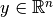 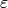-SVR solves the following primal problem:
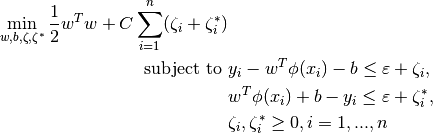
Its dual is
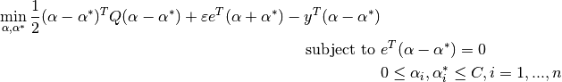
where is the vector of all ones, is the upper bound,
is an by positive semidefinite matrix,
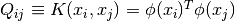
is the kernel. Here training vectors are implicitly mapped into a higher
(maybe infinite) dimensional space by the function .
The decision function is:
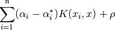
These parameters can be accessed through the members dual_coef_
which holds the difference  ,
, support_vectors_ which
holds the support vectors, and intercept_ which holds the independent
term
References:
- “A Tutorial on Support Vector Regression” Alex J. Smola, Bernhard Schölkopf -Statistics and Computing archive Volume 14 Issue 3, August 2004, p. 199-222